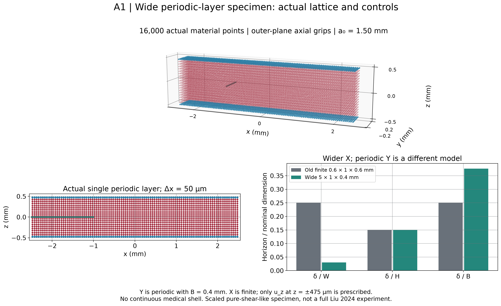
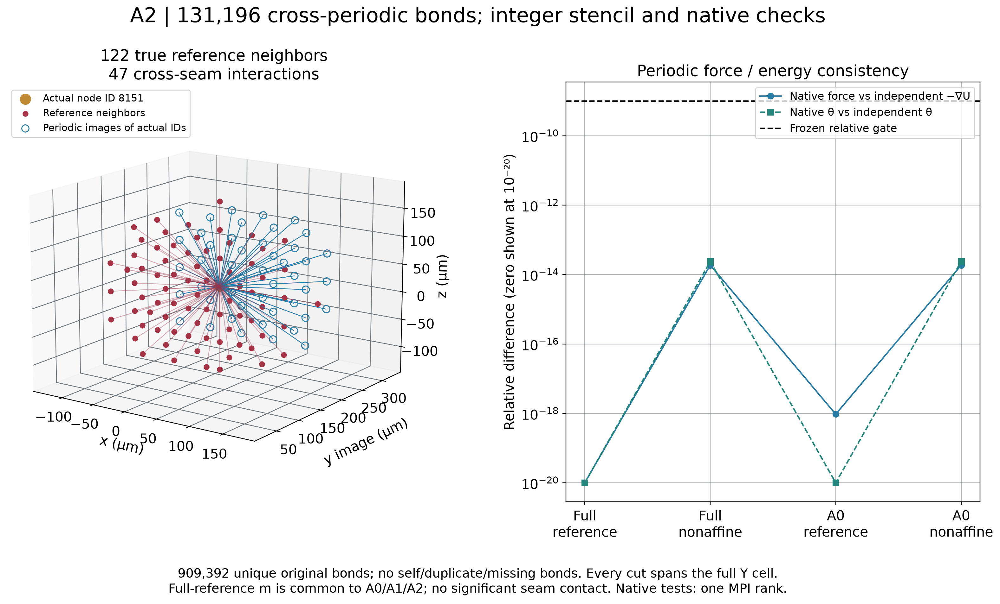
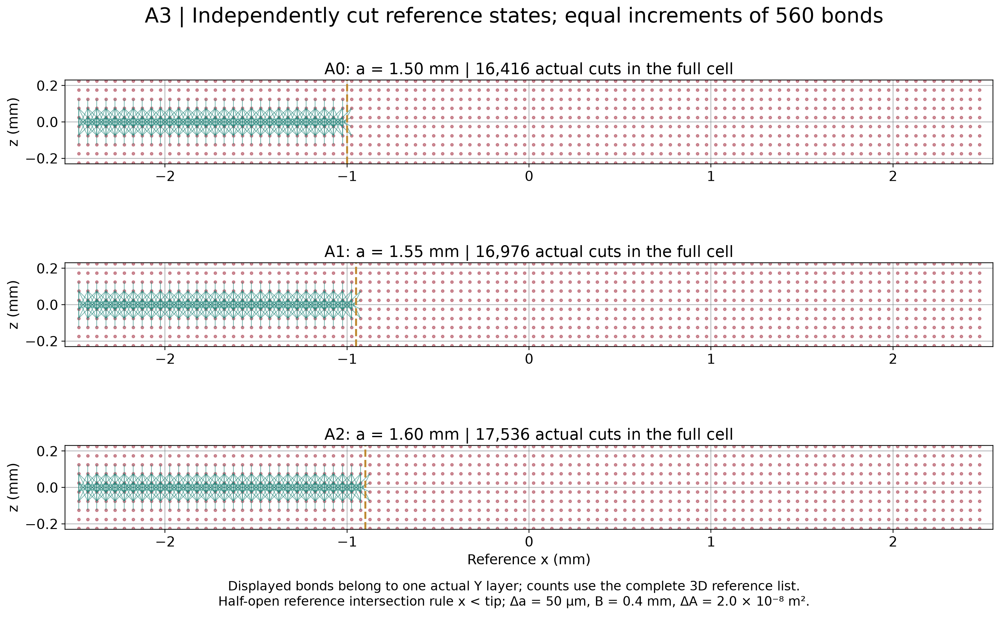
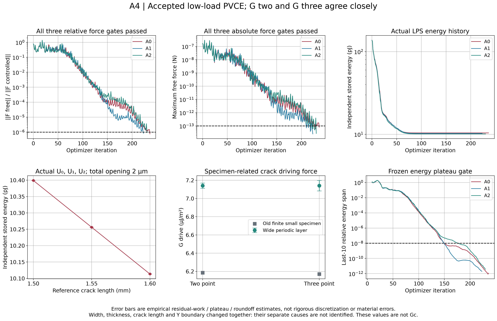
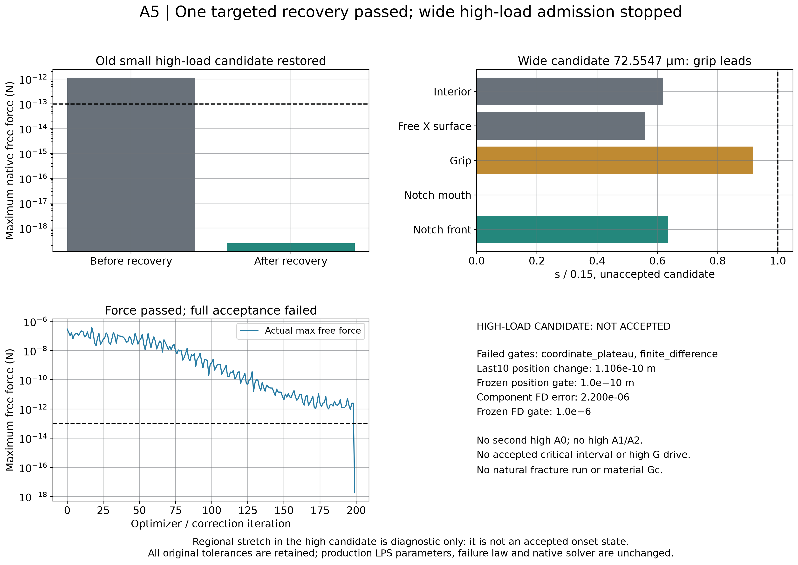
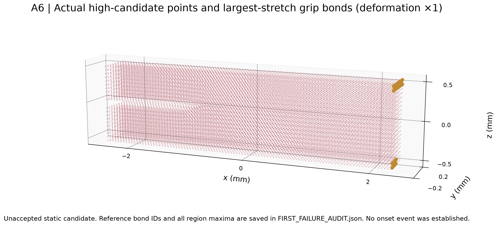
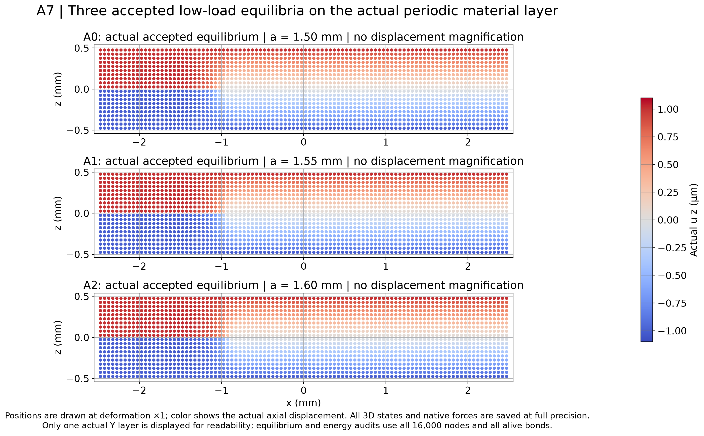

低载三态通过；旧高载恢复通过；宽薄高载候选未验收，已停止。G 是试样驱动力，不是材料 Gc。
run_id：20261011T154854Z
总索引 · 中文科研报告（12 项回答） · 状态 JSON · 冻结方案
| 分项 | 状态 |
|---|---|
| WIDE_GEOMETRY_VALIDITY | PASS_16000_POINTS |
| PERIODIC_BOND_TOPOLOGY | PASS_SINGLE_RANK_STATIC_Y_PERIODIC |
| LPS_FORCE_ENERGY_CONSISTENCY | LOW_PASS_NATIVE_AND_FD_HIGH_COMPONENT_FD_GATE_NOT_PASSED |
| LOW_LOAD_PVCE_EQUILIBRIUM | PASS_3_OF_3 |
| LOW_LOAD_G_DRIVE | PASS_SPECIMEN_DRIVING_FORCE |
| STATIC_SOLVER_RECOVERY | PASS_SAVED_OLD_STATE_CERTIFIED_METADATA_LIMIT_REPORTED |
| NEAR_ONSET_LOCATION | UNACCEPTED_HIGH_CANDIDATE_GRIP_DOMINANT_NO_ONSET_IDENTIFIED |
| NEAR_ONSET_G_DRIVE | NOT_RUN_ENTRANCE_GATE_FAILED |
| MATERIAL_GC | NOT_IDENTIFIED |
| NUMERICAL_SCOPE | FINITE_XZ_PERIODIC_Y_SMALL_PURE_SHEAR_LIKE_STATIC_DIAGNOSTIC_NO_BIOMATERIAL_VALIDATION |







完整原始结果留在服务器：/workspace/y_clot/project/verification/lps_wide_pure_shear_pvce_feasibility_v1/20261011T154854Z；本地回收范围见总索引的 COMPACT_MANIFEST.json。